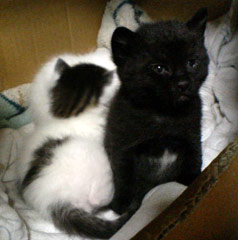

|
■2005/04/04/(Mon)22:05
いちばんの心配
|

生まれた子猫たちのなかで、異色（？）の一匹。
ビミョーな毛色なのです。黒なんだけど、よーく見るとキジ模様。で、胸のとこに☆マーク（写真でわかるかなぁ…）。そのうえ、なんだか毛並みが他と違う。もさもさしてる…ので、モサと呼ばれております…黒猫って、写真を撮るのも難しくて、他の子猫は可愛く撮れているのにもかかわらず、モサだけ怪しい写真になってしまうので（←この写真でもマシなほう…）、売れ残ってしまうのでは…と心配しております。
モサたんサポーター募集です…
そうそう。里親募集の詳細です
白キジ３匹（すべてオス）、キジ（メス・一番暴れん坊）、モサ（オス）
3/3のひな祭り生まれ。
生まれたときから、色んな人間と接しているので、人見知りはまず無いと思います。
過去様々な子猫を見てきましたが、成長の速度が異常に早いので、相当ミルクをガブガブ飲んでいるようです。
東京練馬でただいまスクスク成長中です。
|
|
|